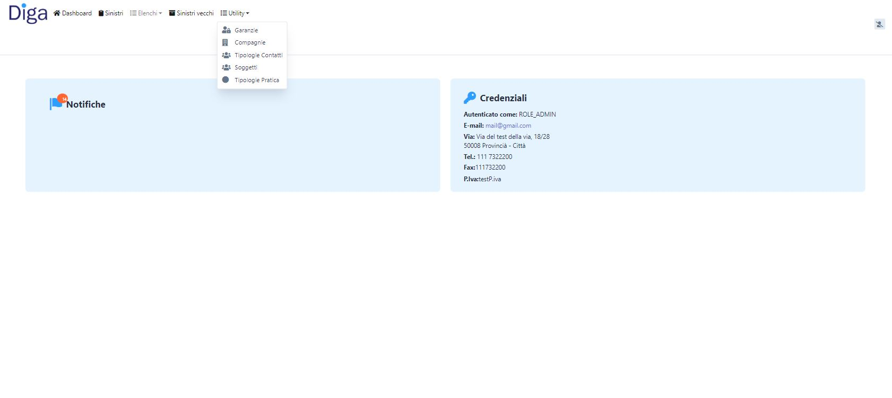
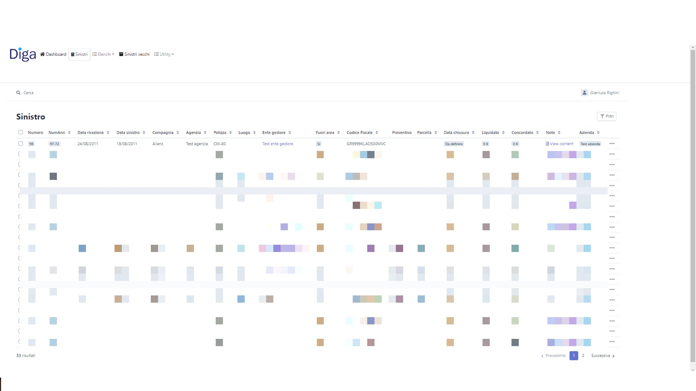
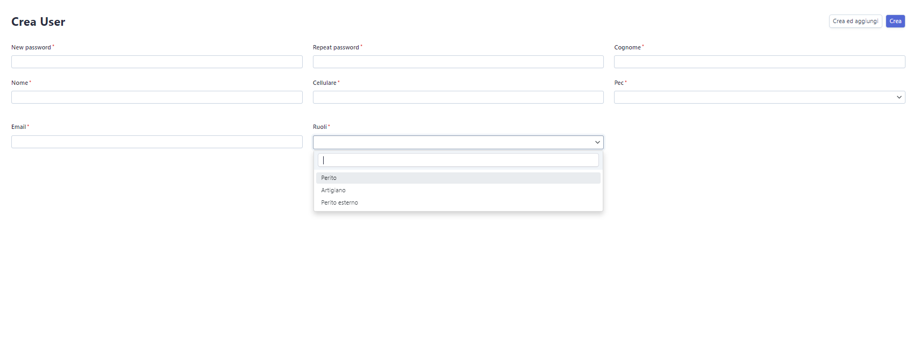

Management software for appraisers, their appraisals and their clients
Below I show some features and CRUD phases of the project.
ERP for real use developed following customer directives, redesign of the old site (and DB). I am the sole creator/developer of the project.
Technologies:
- - Chart.js
- - PHP
- - Symfony
- - jQuery
- - MySQL
- - Bootstrap
- - Select2
- - Ajax
Admin Dashboard
Dashboard for the Admin, supplied with a notification system customized based on the user.

View for CRUD
Example view, with custom filters and CRUD management, allows you to edit fields with a click.

Auth
Used to create users with different permissions.
